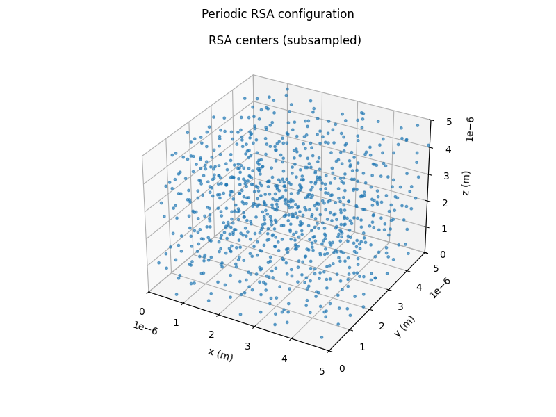

Note
Go to the end to download the full example code.
Periodic-boundary RSA packing#
Periodic boundaries identify opposite faces of the simulation box. They are a good default when measuring bulk quantities because a sphere near one face interacts with spheres near the opposing face.

Accepted 885 spheres at phi=0.100.
from PackLab import monte_carlo, samplers
from PackLab.units import ureg
domain = monte_carlo.PackingDomain(
length_x=5 * ureg.micrometer,
length_y=5 * ureg.micrometer,
length_z=5 * ureg.micrometer,
use_periodic_boundaries=True,
)
radius_sampler = samplers.ConstantRadiusSampler(150 * ureg.nanometer, bins=1)
options = monte_carlo.RSAOptions()
options.random_seed = 8
options.maximum_attempts = 30_000
options.maximum_consecutive_rejections = 8_000
options.target_packing_fraction = 0.10
result = monte_carlo.RSASimulator(domain, radius_sampler, options).run()
print(
f"Accepted {result.statistics.sphere_count} spheres at "
f"phi={result.statistics.packing_fraction_geometry:.3f}."
)
figure = result.plot_centers_3d(show=False)
_ = figure.suptitle("Periodic RSA configuration")
Total running time of the script: (0 minutes 0.088 seconds)